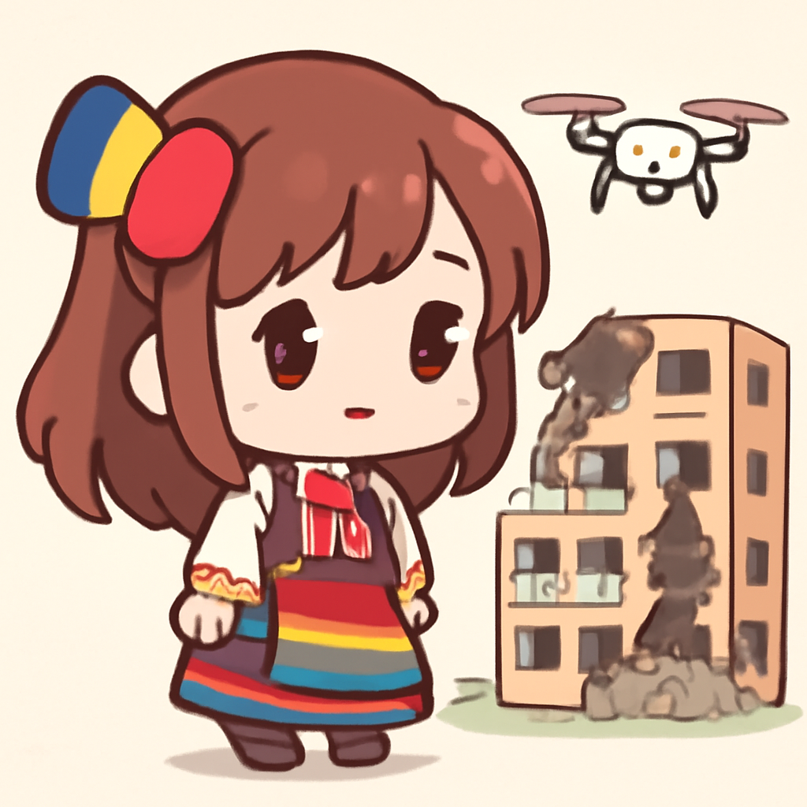
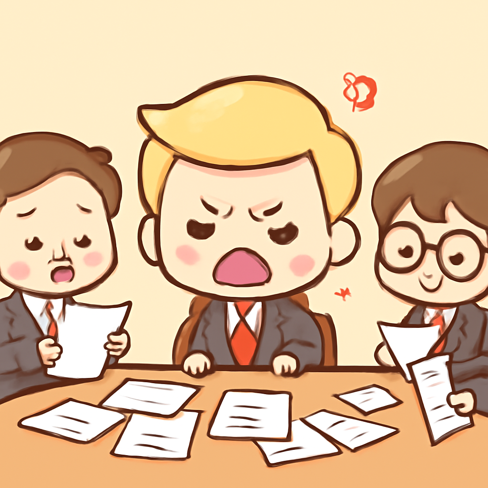
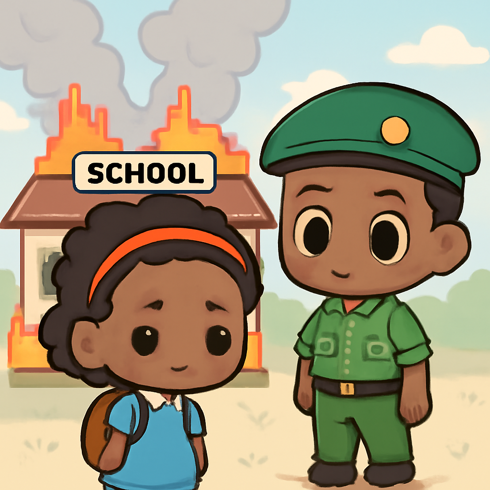
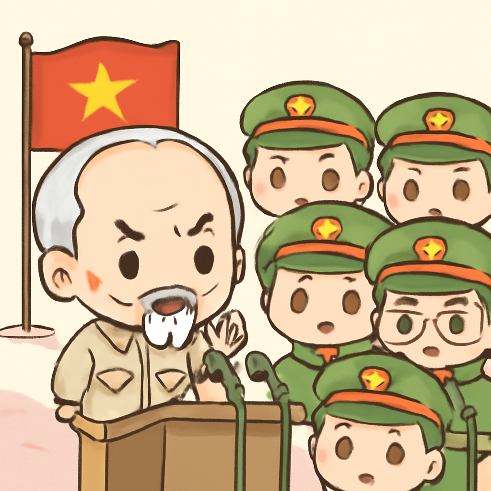

其一 · 羅馬尼亞 · 俄羅斯無人機襲擊公寓大樓
俄羅斯無人機在羅馬尼亞襲擊住宅區，北約譴責其魯莽行為。

在羅馬尼亞，一架俄羅斯無人機意外襲擊了當地的一棟公寓大樓，造成嚴重損壞。這起事件發生在北約與俄羅斯緊張關係加劇的背景下，北約強烈譴責俄羅斯的行為，稱其為「魯莽」。這事件可能會進一步升高地區緊張情勢，讓人不禁想問：無人機是不是也需要負責任呢？
🔗 原始新聞 ↗
2026-05-30 · 以古觀今，以笑抗愁
俄羅斯無人機在羅馬尼亞襲擊住宅區，北約譴責其魯莽行為。

在羅馬尼亞，一架俄羅斯無人機意外襲擊了當地的一棟公寓大樓，造成嚴重損壞。這起事件發生在北約與俄羅斯緊張關係加劇的背景下，北約強烈譴責俄羅斯的行為，稱其為「魯莽」。這事件可能會進一步升高地區緊張情勢，讓人不禁想問：無人機是不是也需要負責任呢？
🔗 原始新聞 ↗
特朗普在華府與顧問會議，未能達成對伊朗的最終協議。

在美國華府，特朗普與顧問進行了長達兩小時的會議，討論有關伊朗的最新提案，但依然未能達成最終協議。這次會議對於緩解美伊緊張關係至關重要，但結果卻令人失望。特朗普的決策過程就像一場持續的政治真人秀，觀眾期待著但總是心懸著。
🔗 原始新聞 ↗
肯亞一所學校宿舍火災造成十六人喪生，八名學生被逮捕。

在肯亞，一場宿舍火災造成十六名學生喪生，警方隨後逮捕了八名涉嫌與火災有關的學生。這起悲劇引發了社會的強烈關注，教育部長表示將對事件進行深入調查。這不僅是一場悲劇，還是對學校安全的一次深刻反思，讓人不禁想，火災警報器是不是應該好好檢查一下。
🔗 原始新聞 ↗
法國極右派領袖在經濟政策上出現分歧，選舉前景不明。
法國極右派的兩位領袖，瑪琳·勒龐與她的接班人喬丹·巴爾德拉，雖然在移民政策上意見一致，但在經濟政策上卻出現了明顯的分歧。這讓即將到來的選舉前景變得更加複雜。看來，連極右派也難以找到一個「一致的聲音」，真是讓人感嘆政治界的變化多端。
🔗 原始新聞 ↗
越南領導人對亞洲超級大國的衝突風險表達擔憂。

在一場針對亞洲軍事領導者的演講中，越南的領導人托·藍強調，超級大國之間的信任缺失可能導致小國被吞併的風險。他的言論引發了地區領導人的關注，提醒大家要注意保持和平。這就像一場沒有結局的博弈，誰都不想成為棋子。
🔗 原始新聞 ↗